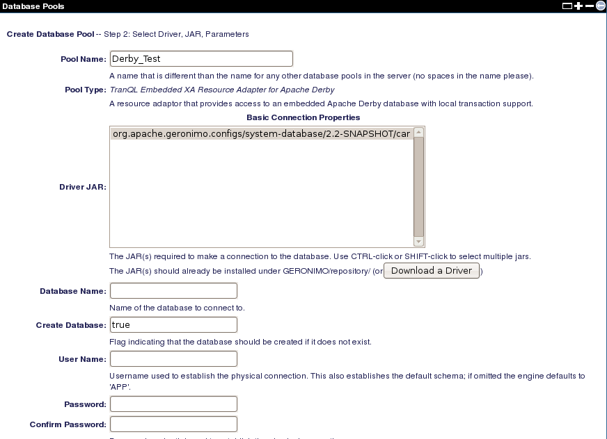
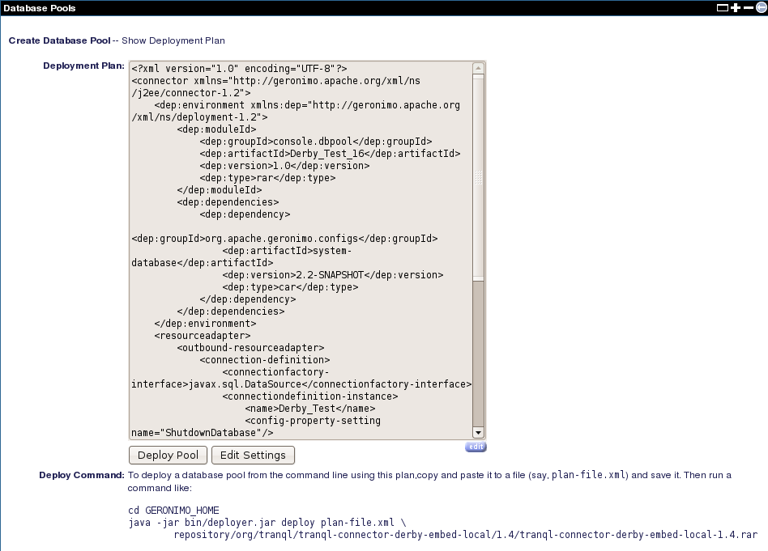

您可以通过从管理控制台单击“数据库池” Portlet上的“ 使用Geronimo数据库池”向导链接来创建新的数据库池。该向导将引导您完成一个简单的四步过程。
- 指定数据库池的名称和数据库类型 。然后单击“ 下一步” 。

- 在下一步中，您必须选择Driver JAR 。对于此示例，从“ 驱动程序JAR”字段中选择JDBC驱动程序，默认情况下已根据您在上一步中选择的数据库类型预先填充了这些JDBC驱动程序。如果所需的驱动程序JAR不存在，则可以通过单击“ 下载驱动程序”按钮访问下载页面，以选择下载驱动程序 。
在“ 数据库名称”字段中指定一个数据库，以供数据库池连接。将“ 创建数据库”设置为true ，以便如果数据库不存在将被创建。另外，您可以通过在Geronimo中创建数据库中介绍的一步步骤手动创建数据库 。您可以单击“ 部署”以部署此数据库池。或者，您可以单击显示计划以查看或编辑此数据库池的部署计划。

- 如果在上一步中单击“ 显示计划” ，则将看到选定数据库池的部署计划 ，如下所示。该计划包含池类型，连接器接口以及设置属性中的连接工厂选项。您可以单击“ 编辑设置”返回上一步来修改设置，或者单击“ 部署池”为数据库池部署部署计划。

- 成功部署后，您将在数据库池 Portlet上看到新数据库池，如下所示。有关如何手动部署数据库计划的其他说明，可以在“ 配置DB2数据源”部分中找到。